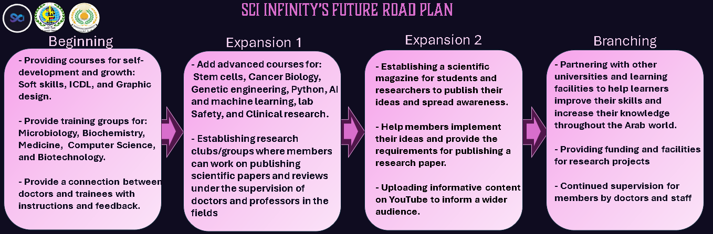

الخطة الزمنية
تهدف المبادرة إلى إعداد باحث متميز ومبتكر. يبدأ الطريق بالتعليم الجامعي، ثم مساعدة الطلاب في اختيار مجال للدراسة والعمل. نقدم دورات تدريبية عملية ونظرية، ثم نعلم أساسيات البحث العلمي وتحليل البيانات. أخيرًا، نوفر بيئة تساعد الباحثين على التطبيق والإبداع من خلال إشراكهم في فرق بحثية مع نخبة من الباحثين.
